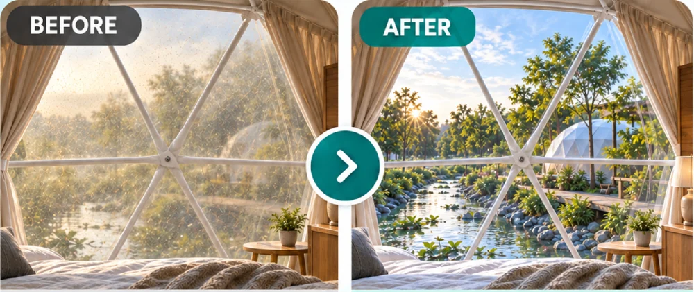
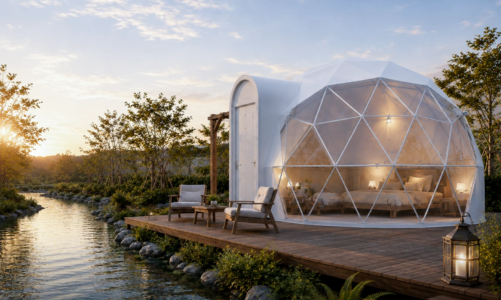
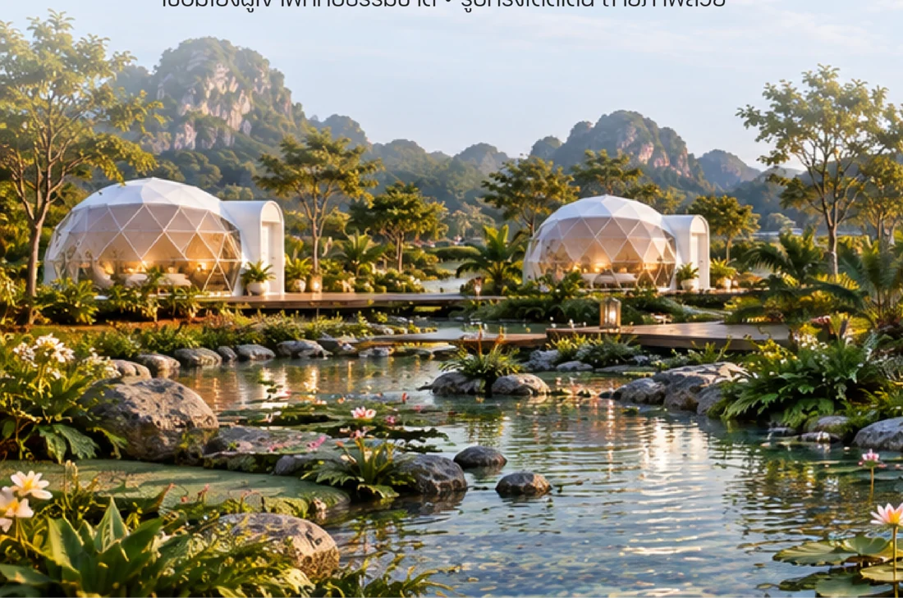
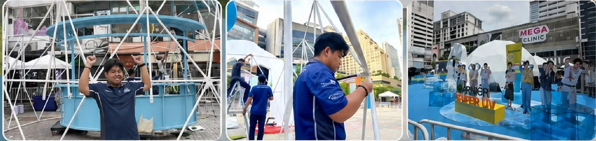
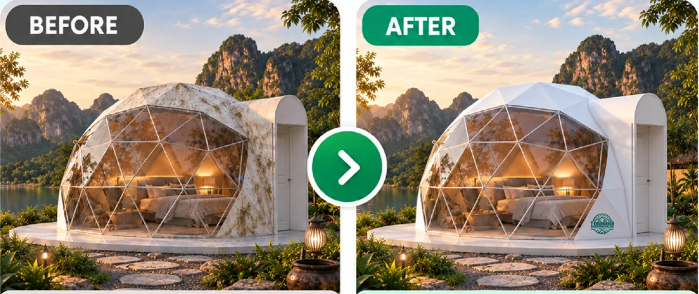
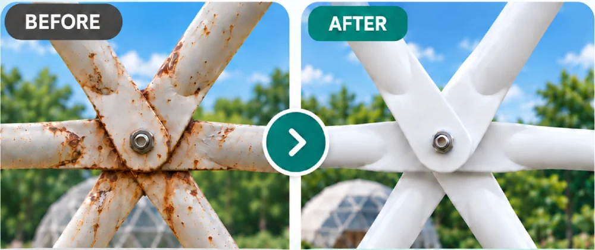
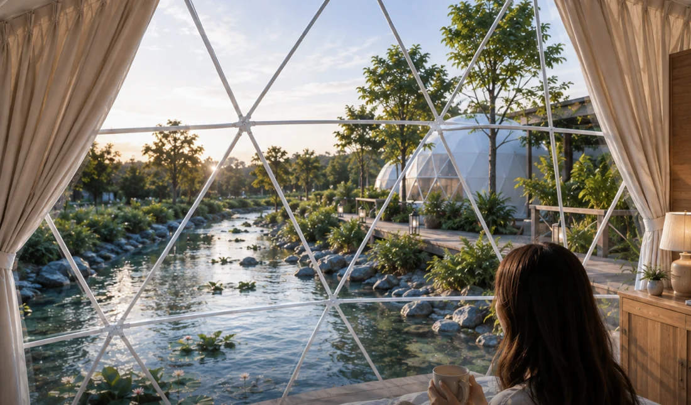

CARE / 01
เปลี่ยนช่องใสเต็นท์รีสอร์ต
ช่องใสเก่า เหลือง หรือขุ่น
ให้คำแนะนำและประเมินการเปลี่ยนช่องใสตามสภาพของเต็นท์
ปรึกษาและประเมินงาน
T-EVERGREEN RESORT
High Season นี้ อย่าปล่อยให้พื้นที่ว่างเปล่า
เริ่มต้นพื้นที่รีสอร์ต งานอีเวนต์ และการดูแลเต็นท์ไปกับเรา
01 / RESORT SOLUTIONS
เตรียมธุรกิจของคุณให้พร้อมรับนักท่องเที่ยว ด้วยบริการเรื่องเต็นท์รีสอร์ตจาก T-EVERGREEN RESORT

YOUR NEXT DESTINATION
จำหน่ายเต็นท์โดมรีสอร์ต เต็นท์มองโกล และเต็นท์กระโจมไร้เสากลาง พร้อมให้คำปรึกษาตามความต้องการของโครงการ
แนะนำงานฐาน ห้องน้ำ และงานประกอบให้เหมาะกับพื้นที่
ทีมงานผู้เชี่ยวชาญให้คำปรึกษาและดูแลงานประกอบ
บำรุงรักษา แก้ไข และประเมินแนวทางตามสภาพจริง
ภาพบรรยากาศใช้ประกอบแนวคิดการจัดพื้นที่ รายละเอียดงานขึ้นอยู่กับโครงการ
02 / DOME RENTAL
บริการเช่าโดมสำหรับงานอีเวนต์และจัดแสดงสินค้า ให้โดมเป็นส่วนหนึ่งของบรรยากาศงานที่คุณต้องการ
สอบถามบริการเช่าโดม
แจ้งจังหวัด สถานที่ และขนาดพื้นที่
แจ้งวันใช้งานและช่วงเวลาที่ต้องการติดตั้ง
เล่าประเภทงานและขนาดโดมที่สนใจ
ขนาดโดม ราคา ระยะเวลาเช่า และรายละเอียดการติดตั้ง โปรดสอบถามเพื่อประเมินตามหน้างาน
03 / CARE & MAINTENANCE
โดมใช้งานมาหลายปี ช่องใสเริ่มเหลืองหรือขุ่น ผ้าคลุมมีคราบ หรือโครงเหล็กบางจุดชำรุดและเป็นสนิม ให้เราช่วยประเมินแนวทางดูแลตามสภาพการใช้งานจริง

ช่องใสเก่า เหลือง หรือขุ่น
ให้คำแนะนำและประเมินการเปลี่ยนช่องใสตามสภาพของเต็นท์
ปรึกษาและประเมินงาน
ผ้าคลุมมีคราบหรือเสื่อมสภาพ
ตรวจสอบรายละเอียดผ้าคลุมและประเมินแนวทางเปลี่ยนให้เหมาะกับโดม
ปรึกษาและประเมินงาน
โครงบางจุดชำรุดหรือเป็นสนิม
ประเมินจุดที่ต้องแก้ไขและเปลี่ยนชิ้นส่วนตามสภาพจริง
ปรึกษาและประเมินงานภาพเปรียบเทียบใช้ประกอบคำอธิบายบริการ ผลงานและแนวทางแก้ไขขึ้นอยู่กับสภาพหน้างาน

BETTER RESORT, BRIGHTER TOMORROW
VIDEO GUIDE / 09 TUTORIALS
คู่มือประกอบ ติดตั้ง และดูแลเต็นท์
กดเลือกคลิปเพื่อเปิดดูบน YouTube
 YouTube
YouTube YouTube
YouTube YouTube
YouTube YouTube
YouTube YouTube
YouTube YouTube
YouTube YouTube
YouTube YouTube
YouTube YouTube
YouTubeLET’S START SOMETHING GOOD
ปรึกษาเรื่องเต็นท์รีสอร์ต บริการเช่าโดม
หรือการดูแลเต็นท์ที่ใช้งานอยู่กับทีมงานของเรา
สแกน QR Code
หรือกดปุ่มเพื่อสอบถามทีมงาน